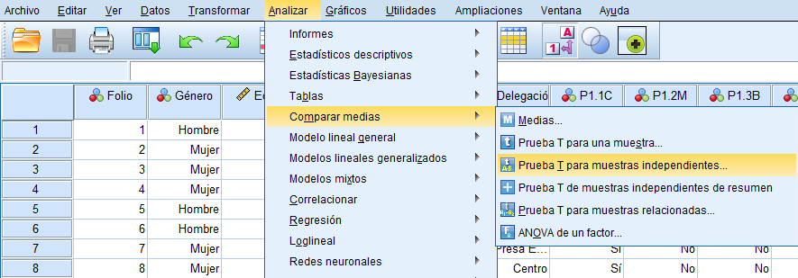
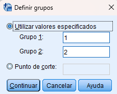
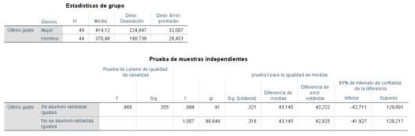
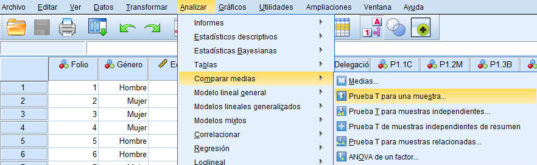
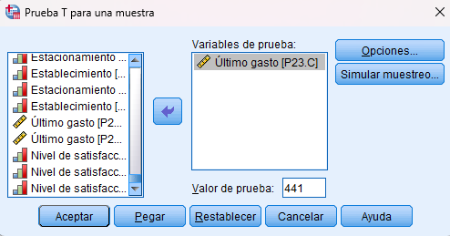
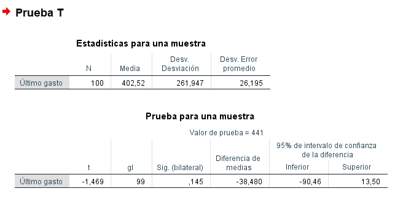
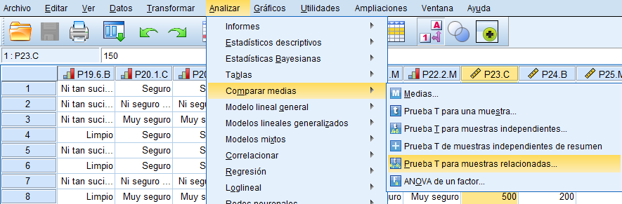
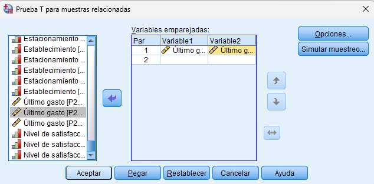
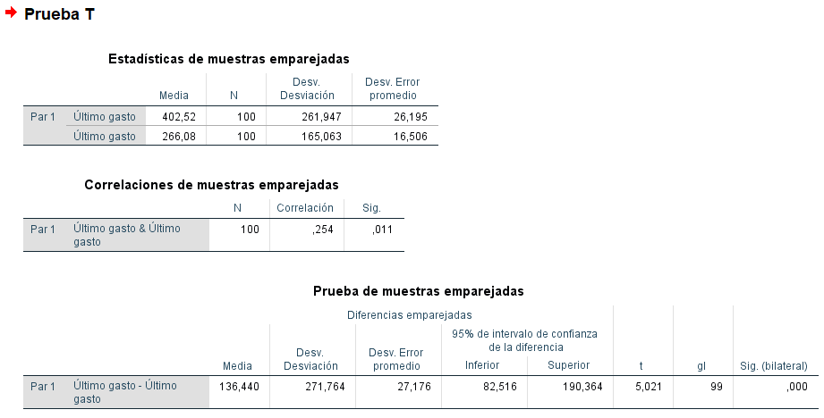

En el análisis de datos, es común plantear afirmaciones que requieren ser comprobadas con evidencia estadística. Las pruebas de hipótesis permiten evaluar estas afirmaciones utilizando datos muestrales, con el objetivo de tomar decisiones fundamentadas sobre una población. Por ejemplo, afirmaciones como “existen diferencias de gasto entre hombres y mujeres” o “el gasto promedio de una empresa es menor al del mercado” pueden ser evaluadas mediante este tipo de pruebas.
Toda prueba de hipótesis se basa en dos planteamientos: Hipótesis nula (H₀): establece que no existe efecto o diferencia. Hipótesis alternativa (H₁): plantea que sí existe un efecto o diferencia.
H₀: El gasto promedio de hombres y mujeres es igual. H₁: El gasto promedio de las mujeres es menor que el de los hombres.
El criterio principal para aceptar o rechazar hipótesis es el valor p (nivel de significancia), que en SPSS aparece como “Sig.” o “Sig. (bilateral)”.
Si p < 0.05 → se rechaza H₀ y se acepta H₁ Si p ≥ 0.05 → no se rechaza H₀ Este criterio indica si la evidencia encontrada en los datos es suficiente para respaldar la hipótesis del investigador.
Comparar las medias de dos grupos distintos e independientes.
Comparar el gasto promedio entre hombres y mujeres.
Ir a: Analizar → Comparar Medias → Prueba T para muestras independientes
Seleccionar la variable dependiente (ej. gasto)
Seleccionar la variable de agrupación (ej. género)
Definir los grupos (ej. 1 = MUJERES , 2 = HOMBRES)

Ejecutar el análisis
Se debe observar el valor Sig. (2-tailed): Si p ≥ 0.05 → no existen diferencias significativas Si p < 0.05 → existen diferencias significativas
Comparar la media de una muestra con un valor de referencia.
Evaluar si el gasto promedio de un cliente es menor que el salario mínimo. Hipótesis nula (H₀): El gasto promedio de un cliente es menor que el salario mínimo. Hipótesis alternativa (H₁): el gasto promedio de un cliente es mayor que el salario mínimo.


Ir a: Analizar → Comparar Medias → Prueba T para una muestra
Seleccionar la variable (ej. gasto)
Ingresar el valor de referencia en “Valor de prueba”
Ejecutar


Si p < 0.05 → la media es significativamente diferente del valor de referencia Si p ≥ 0.05 → no hay diferencia significativa
Comparar dos mediciones realizadas sobre los mismos individuos.
Comparar el gasto en diferentes establecimientos.
Ir a: Analizar → Comparar Medias → Prueba T para muestras relacionadas
Seleccionar las dos variables relacionadas


Ejecutar
Si p < 0.05 → existe un cambio significativo Si p ≥ 0.05 → no existe cambio significativo
Las pruebas de hipótesis permiten tomar decisiones basadas en datos. El valor p es el criterio central de interpretación. Es fundamental definir correctamente las hipótesis antes del análisis.

